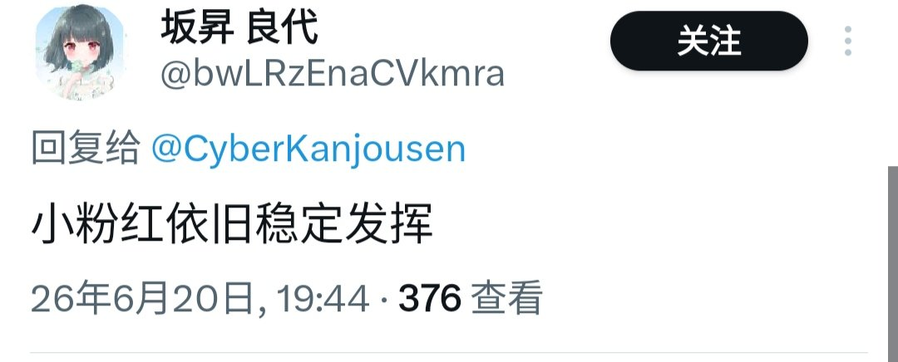
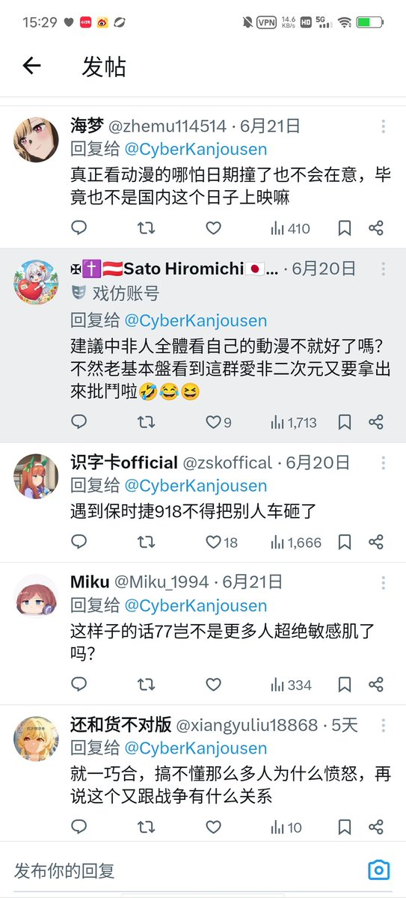

那么从结果来看，環状線实际上有「误导」吗？假如環状線真的「误导」看见那条推文的人，那么環状線使他们「错误」相信了什么？
環状線说「盲猜有些人一看到这个消息这个日期又要说『辱华』了」，你认为環状線发表「有些人一看到这个消息这个日期会说『辱华』」这个观点是在「误导」吗？環状線没有放出评论区内的敏感肌粉红的不友好回复，那就是「误导」了吗？

環状線说「盲猜有些人一看到这个消息这个日期又要说『辱华』了」，你认为環状線发表「有些人一看到这个消息这个日期会说『辱华』」这个观点是在「误导」吗？環状線没有放出评论区内的敏感肌粉红的不友好回复，那就是「误导」了吗？


@CyberKanjousen 我后面又回复你的帖子也没说评论区啊
我指的是既然你认为有品客会敏感就应直接挂出来 并指责这些人看到918就会说『辱华』 所以我觉得这些评论是符合我口中的被误导群体
你认为有品客就应该你把敏感肌言论说『辱华』的评论截下来取证 而不是让我自证
当然 在哪里找有品客认为辉夜姬辱华 当然是评论区 https://t.co/ud2XomZhC7
我指的是既然你认为有品客会敏感就应直接挂出来 并指责这些人看到918就会说『辱华』 所以我觉得这些评论是符合我口中的被误导群体
你认为有品客就应该你把敏感肌言论说『辱华』的评论截下来取证 而不是让我自证
当然 在哪里找有品客认为辉夜姬辱华 当然是评论区 https://t.co/ud2XomZhC7